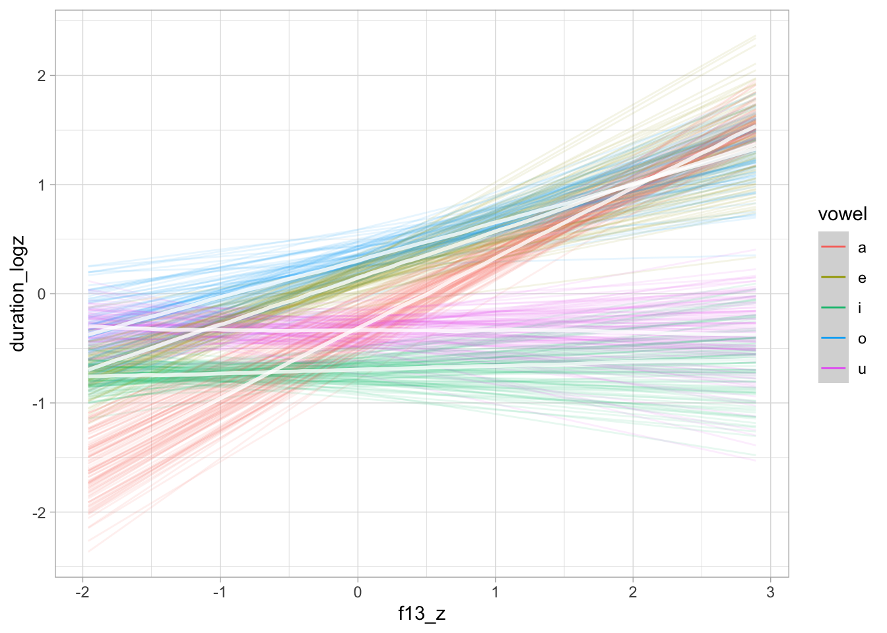
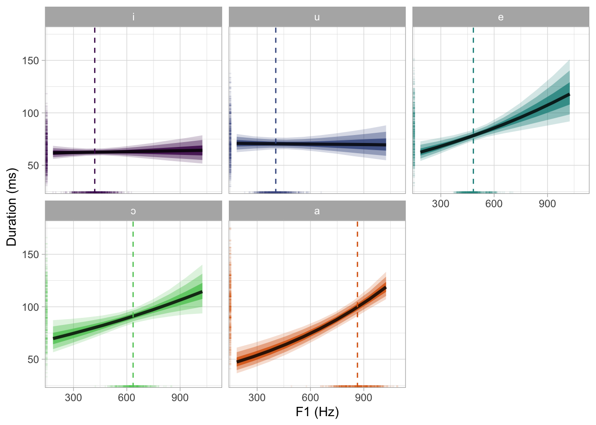
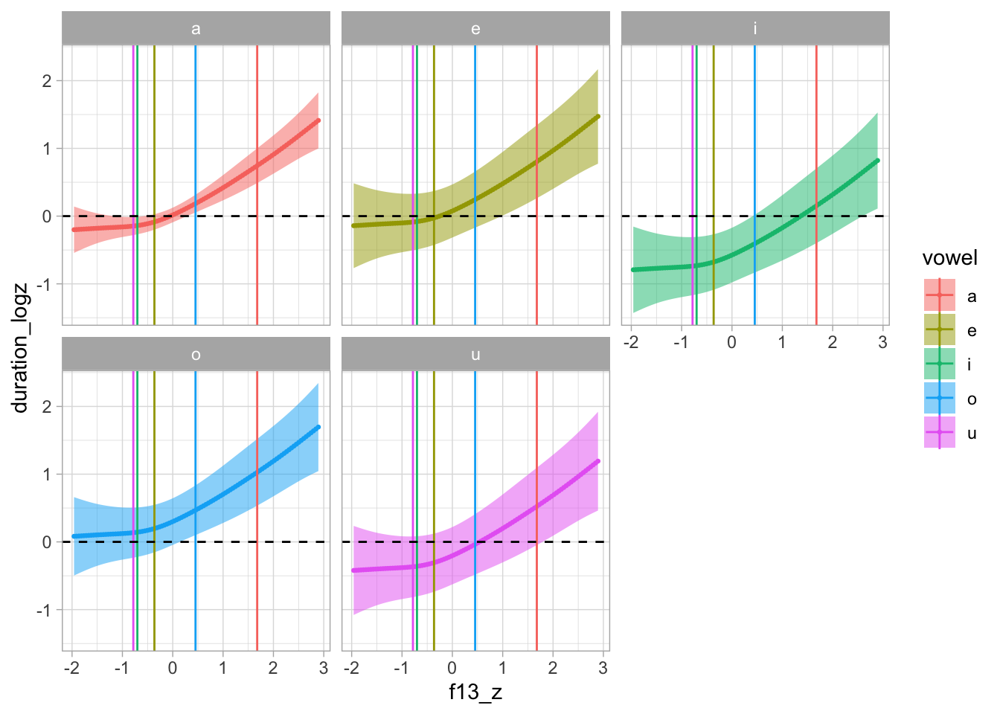
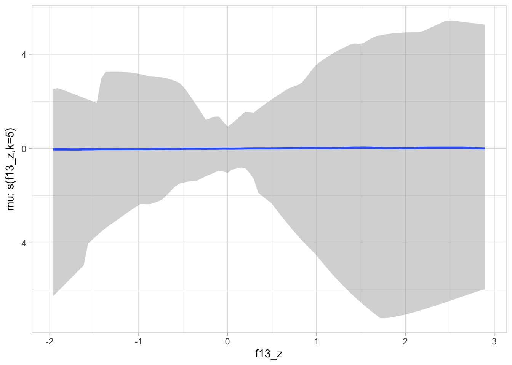
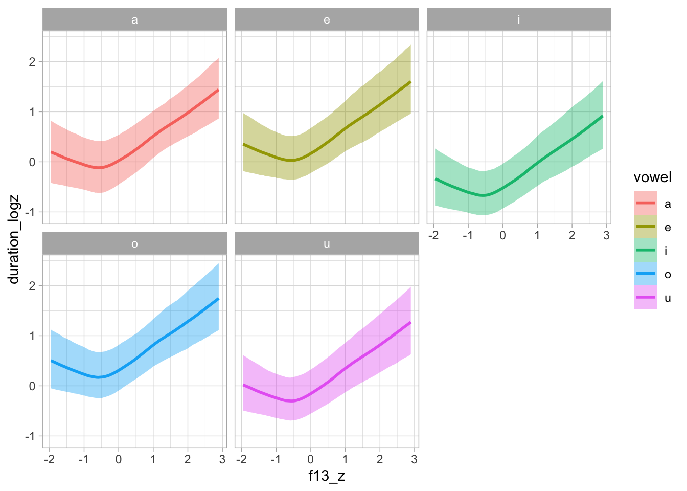
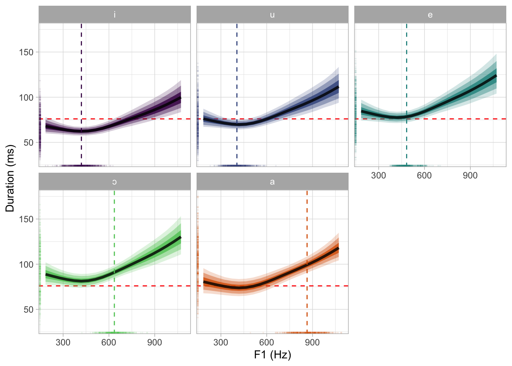
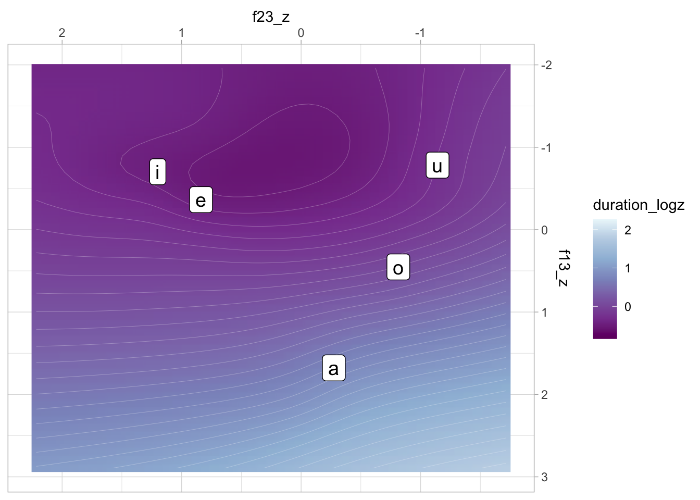

library(tidyverse)
theme_set(theme_light())
library(magrittr)
library(coretta2018itaegg)
library(brms)
library(posterior)
library(tidybayes)
library(marginaleffects)
library(ggdist)
library(mgcv)
library(tidygam)
my_seed <- 9899Analysis of intrinsic vowel duration in Northwestern Italian
Attach packages
Read data
data("formants")
formants %<>% mutate(
duration = duration * 1000,
vowel = as.factor(label),
duration_z = as.vector(scale(duration)),
duration_log = log(duration),
duration_logz = as.vector(scale(log(duration))),
f13_z = as.vector(scale(f13)),
f23_z = as.vector(scale(f23)),
speaker = as.factor(speaker)
)
contrasts(formants$vowel) <- "contr.sum"Plotting
formants %>%
group_by(speaker) %>%
mutate(
f13_speaker_z = as.vector(scale(f13)),
f23_speaker_z = as.vector(scale(f23))
) %>%
ggplot(aes(f23_speaker_z, f13_speaker_z, colour = vowel)) +
geom_point(alpha = 0.2) +
stat_ellipse(type = "norm") +
scale_x_reverse(position = "top") + scale_y_reverse(position = "right") +
coord_fixed()formants %>%
group_by(speaker) %>%
mutate(
f13_speaker_z = as.vector(scale(f13)),
f23_speaker_z = as.vector(scale(f23))
) %>%
ggplot(aes(f23_speaker_z, f13_speaker_z)) +
geom_point(aes(colour = duration), alpha = 0.8) +
stat_ellipse(aes(group = vowel), type = "norm") +
scale_x_reverse(position = "top") + scale_y_reverse(position = "right") +
coord_fixed()formants %>%
ggplot(aes(f13_z, duration_z)) +
geom_density_2d_filled()
formants %>%
ggplot(aes(f13_z, duration_z, colour = vowel)) +
geom_point(alpha = 0.2) +
geom_smooth(method = "lm", formula = y ~ x)
Linear modelling
Prior predictive checks
The outcome duration_logz and predictor f13_z are z-scored and vowel is sum coded so that Intercept is the grand mean.
I am using relatively weakly informative priors.
priors <- c(
prior(normal(0, 1), class = Intercept),
prior(normal(0, 1), class = b),
prior(cauchy(0, 0.1), class = sigma),
prior(lkj(2), class = cor),
prior(cauchy(0, 0.1), class = sd)
)
bm_1_priors <- brm(
duration_logz ~
vowel * f13_z +
(vowel * f13_z | speaker),
family = gaussian,
data = formants,
prior = priors,
cores = 4,
threads = threading(2),
backend = "cmdstanr",
sample_prior = "only",
file = "data/cache/bm_1_priors",
)conditional_effects(bm_1_priors, "f13_z:vowel")
conditional_effects(bm_1_priors, "vowel")
Model fit
bm_1 <- brm(
duration_logz ~
vowel * f13_z +
(vowel * f13_z | speaker),
family = gaussian,
data = formants,
prior = priors,
cores = 4,
threads = threading(2),
backend = "cmdstanr",
file = "data/cache/bm_1",
)fixef(bm_1, probs = c(0.05, 0.95)) Estimate Est.Error Q5 Q95
Intercept -0.15456092 0.14810441 -0.39139975 0.09485949
vowel1 -0.28607100 0.13267976 -0.51491880 -0.07680009
vowel2 0.35434327 0.05833619 0.25963235 0.45007120
vowel3 -0.32030985 0.05730238 -0.41276840 -0.22539825
vowel4 0.47457028 0.07210259 0.35954355 0.59458675
f13_z 0.36700826 0.05277162 0.28164785 0.45174305
vowel1:f13_z 0.35767128 0.08984698 0.21301775 0.50970635
vowel2:f13_z 0.12961894 0.09920732 -0.03739698 0.28873440
vowel3:f13_z -0.05189318 0.06790845 -0.16322630 0.06080566
vowel4:f13_z -0.01187440 0.10306594 -0.18354195 0.15770550Let’s get the estimated effect of vowel quality for /u/.
bm_1_draws <- as_draws_df(bm_1) %>%
mutate(
vowel5 = b_Intercept - b_vowel1 - b_vowel2 - b_vowel3 - b_vowel4,
b_vowel5 = vowel5 - b_Intercept
)
quantile(bm_1_draws$b_vowel5, probs = c(0.05, 0.95)) 5% 95%
-0.37541152 -0.07203285 bm_1 %>%
as_draws_df() %>%
select(b_vowel1:b_vowel4) %>%
pivot_longer(b_vowel1:b_vowel4) %>%
group_by(name) %>%
summarise(
cri95 = list(round(quantile2(value, probs = c(0.025, 0.975)), 2)),
cri90 = list(round(quantile2(value, probs = c(0.05, 0.95)), 2)),
cri80 = list(round(quantile2(value, probs = c(0.1, 0.9)), 2)),
cri60 = list(round(quantile2(value, probs = c(0.2, 0.8)), 2))
) %>%
knitr::kable(format = "latex") %>% cat(sep = "\n")Warning: Dropping 'draws_df' class as required metadata was removed.
\begin{tabular}{l|l|l|l|l}
\hline
name & cri95 & cri90 & cri80 & cri60\\
\hline
b\_vowel1 & -0.55, -0.04 & -0.51, -0.08 & -0.46, -0.12 & -0.40, -0.17\\
\hline
b\_vowel2 & 0.24, 0.47 & 0.26, 0.45 & 0.28, 0.43 & 0.3, 0.4\\
\hline
b\_vowel3 & -0.43, -0.21 & -0.41, -0.23 & -0.39, -0.25 & -0.37, -0.27\\
\hline
b\_vowel4 & 0.33, 0.62 & 0.36, 0.59 & 0.38, 0.57 & 0.42, 0.53\\
\hline
\end{tabular}Model plotting
conditional_effects(bm_1, "f13_z:vowel", prob = 0.9)
conditional_effects(bm_1, "f13_z:vowel", spaghetti = TRUE, ndraws = 100, prob = 0.9)
We need to get the predicted draws to convert duration and F1 back to ms and hz. Note that duration was logged then scaled.
seq_minmax <- function(x, by = 1) {
seq(min(x), max(x), by = by)
}
bm_1_grid <- expand_grid(
vowel = levels(formants$vowel),
f13_z = seq_minmax(formants$f13_z, 0.5)
)
bm_1_preds <- epred_draws(bm_1, newdata = bm_1_grid, re_formula = NA) %>%
mutate(
duration_log = .epred * sd(formants$duration_log) + mean(formants$duration_log),
duration = exp(duration_log),
f13 = f13_z * sd(formants$f13) + mean(formants$f13)
)Let’s also calculate the mean F1 values for each vowel, to be added in the plot below.
vmean_f13 <- formants %>%
group_by(vowel) %>%
summarise(f13_mean = mean(f13))
vmean_f13z <- formants %>%
group_by(vowel) %>%
summarise(f13z_mean = mean(f13_z))We can now plot the model predictions in the original scale.
bm_1_preds %>%
group_by(vowel, f13) %>%
summarise(
duration_ms = median(duration),
# Get the 90% CrI
q0.05 = quantile(duration, probs = 0.05),
q0.90 = quantile(duration, probs = 0.95),
.groups = "drop"
) %>%
ggplot(aes(f13, duration_ms)) +
geom_ribbon(aes(ymin = q0.05, ymax = q0.90, fill = vowel), alpha = 0.25) +
geom_line(aes(colour = vowel), linewidth = 1) +
facet_wrap(~vowel) +
scale_colour_viridis_d() +
scale_fill_viridis_d()
bm_1_preds %>%
group_by(vowel, f13) %>%
ggplot(aes(f13, duration)) +
stat_lineribbon() +
facet_wrap(~vowel) +
scale_fill_brewer()bm_1_preds %>%
group_by(vowel, f13) %>%
ggplot(aes(f13, duration, fill = vowel)) +
stat_ribbon(.width = 0.98, alpha = 0.2) +
stat_ribbon(.width = 0.9, alpha = 0.4) +
stat_lineribbon(.width = 0.6, alpha = 0.8) +
geom_vline(data = vmean_f13, aes(xintercept = f13_mean, colour = vowel), linetype = "dashed") +
geom_rug(data = formants, alpha = 0.1, length = unit(0.015, "npc"), aes(colour = vowel)) +
facet_wrap(~vowel) +
labs(
x = "F1 (Hz)", y = "Duration (ms)"
) +
scale_fill_viridis_d() +
scale_colour_viridis_d() +
theme(legend.position = "none")
ggsave("img/bm1-pred-plot-ms-hz.png", width = 7, height = 5)But let’s also plot this in the standardised logged duration scale.
bm_1_preds %>%
group_by(vowel, f13) %>%
ggplot(aes(f13_z, .epred, fill = vowel)) +
stat_ribbon(.width = 0.98, alpha = 0.2) +
stat_ribbon(.width = 0.9, alpha = 0.4) +
stat_lineribbon(.width = 0.6, alpha = 0.8) +
geom_vline(data = vmean_f13z, aes(xintercept = f13z_mean, colour = vowel)) +
facet_wrap(~vowel) +
scale_fill_viridis_d()
Average predictions and comparisons
avg_comparisons(bm_1, variables = "f13_z", conf_level = 0.9)
Term Contrast Estimate 5.0 % 95.0 %
f13_z +1 0.357 0.287 0.427
Columns: term, contrast, estimate, conf.low, conf.high avg_comparisons(bm_1, variables = "f13_z", by = "vowel", conf_level = 0.9)
Term Contrast vowel Estimate 5.0 % 95.0 %
f13_z mean(+1) o 0.3583 0.163 0.5559
f13_z mean(+1) a 0.7207 0.575 0.8842
f13_z mean(+1) e 0.5006 0.320 0.6735
f13_z mean(+1) u -0.0566 -0.201 0.0906
f13_z mean(+1) i 0.3164 0.219 0.4172
Columns: term, contrast, vowel, estimate, conf.low, conf.high, predicted, predicted_hi, predicted_lo, tmp_idx avg_predictions(bm_1, by = "vowel", conf_level = 0.9) %>%
as_tibble() %>%
mutate_if(
is.numeric, function (x) {exp(x * sd(formants$duration_log) + mean(formants$duration_log))}
)# A tibble: 5 × 4
vowel estimate conf.low conf.high
<fct> <dbl> <dbl> <dbl>
1 a 99.5 98.4 101.
2 e 79.2 78.3 80.1
3 i 63.7 63.0 64.4
4 o 91.3 90.1 92.5
5 u 70.8 70.0 71.5Group-level effects
bm_1_ranef <- bm_1 %>%
spread_draws(b_Intercept, r_speaker[subject,var]) %>%
mutate(condition_mean = b_Intercept + r_speaker)bm_1_ranef %>%
filter(var == "f13_z") %>%
ggplot(aes(y = reorder(subject, r_speaker, median), x = r_speaker)) +
stat_halfeye()
Non-linear modelling
F1
gam_1 <- bam(
duration_logz ~
vowel +
s(f13_z) +
s(f13_z, speaker, by = vowel, bs = "fs", m = 1),
data = formants
)summary(gam_1)
Family: gaussian
Link function: identity
Formula:
duration_logz ~ vowel + s(f13_z) + s(f13_z, speaker, by = vowel,
bs = "fs", m = 1)
Parametric coefficients:
Estimate Std. Error t value Pr(>|t|)
(Intercept) 0.01644 0.07064 0.233 0.8160
vowel1 -0.37509 0.18756 -2.000 0.0456 *
vowel2 0.31573 0.14358 2.199 0.0280 *
vowel3 -0.32102 0.12877 -2.493 0.0127 *
vowel4 0.36146 0.16098 2.245 0.0248 *
---
Signif. codes: 0 '***' 0.001 '**' 0.01 '*' 0.05 '.' 0.1 ' ' 1
Approximate significance of smooth terms:
edf Ref.df F p-value
s(f13_z) 4.522 5.439 16.791 <2e-16 ***
s(f13_z,speaker):vowela 25.638 145.000 6.699 <2e-16 ***
s(f13_z,speaker):vowele 24.058 137.000 6.514 <2e-16 ***
s(f13_z,speaker):voweli 27.487 157.000 4.448 <2e-16 ***
s(f13_z,speaker):vowelo 34.267 149.000 6.074 <2e-16 ***
s(f13_z,speaker):vowelu 31.521 151.000 6.066 <2e-16 ***
---
Signif. codes: 0 '***' 0.001 '**' 0.01 '*' 0.05 '.' 0.1 ' ' 1
R-sq.(adj) = 0.712 Deviance explained = 72.7%
fREML = 2663.4 Scale est. = 0.28762 n = 3053vmean <- aggregate(formants$f13_z, list(formants$vowel), mean)
# fs_terms <- c("s(f13_z,speaker)")
fs_terms <- c("s(f13_z,speaker):vowela", "s(f13_z,speaker):vowele", "s(f13_z,speaker):voweli", "s(f13_z,speaker):vowelo", "s(f13_z,speaker):vowelu")
predict_gam(gam_1, exclude_terms = fs_terms, length_out = 100) %>%
plot(series = "f13_z", comparison = "vowel") +
geom_vline(data = vmean, aes(xintercept = x, colour = Group.1)) +
geom_hline(yintercept = 0, linetype = "dashed") +
facet_wrap(~vowel)Warning: There was 1 warning in `dplyr::mutate()`.
ℹ In argument: `fit = rowSums(dplyr::across())`.
Caused by warning:
! Using `across()` without supplying `.cols` was deprecated in dplyr 1.1.0.
ℹ Please supply `.cols` instead.
BRM
priors_s <- c(
prior(normal(0, 1), class = Intercept),
prior(normal(0, 1), class = b),
prior(cauchy(0, 0.01), class = sigma),
prior(cauchy(0, 1), class = sds)
)
bms_1_priors <- brm(
duration_logz ~
vowel +
s(f13_z, k = 5) +
s(f13_z, speaker, by = vowel, bs = "fs", m = 1, k = 5),
family = gaussian,
data = formants,
prior = priors_s,
sample_prior = "only",
cores = 4,
threads = threading(2),
backend = "cmdstanr",
file = "data/cache/bms_1_priors",
seed = my_seed
)conditional_effects(bms_1_priors, "f13_z:vowel")
conditional_effects(bms_1_priors, "f13_z:vowel", spaghetti = TRUE, ndraws = 100)
We specify k = 5 based on the mgcv modelling above. Reducing k speeds up estimation (because there are less basis functions, hence less parameters to estimate).
The model takes about 4-5 hours to run on 8 cores.
bms_1 <- brm(
duration_logz ~
vowel +
s(f13_z, k = 5) +
s(f13_z, speaker, by = vowel, k = 5, bs = "fs", m = 1),
family = gaussian,
data = formants,
prior = priors_s,
cores = 4,
iter = 4000,
control = list(adapt_delta = 0.9999),
threads = threading(2),
backend = "cmdstanr",
file = "data/cache/bms_1",
seed = my_seed
)summary(bms_1, prob = 0.9) Family: gaussian
Links: mu = identity; sigma = identity
Formula: duration_logz ~ vowel + s(f13_z, k = 5) + s(f13_z, speaker, by = vowel, k = 5, bs = "fs", m = 1)
Data: formants (Number of observations: 3053)
Draws: 4 chains, each with iter = 4000; warmup = 2000; thin = 1;
total post-warmup draws = 8000
Smooth Terms:
Estimate Est.Error l-90% CI u-90% CI Rhat Bulk_ESS
sds(sf13_z_1) 2.04 1.13 0.96 3.89 1.00 1391
sds(sf13_zspeakervowela_1) 0.31 0.22 0.03 0.71 1.01 544
sds(sf13_zspeakervowela_2) 1.88 1.72 0.09 5.25 1.02 486
sds(sf13_zspeakervowele_1) 0.34 0.22 0.03 0.73 1.00 374
sds(sf13_zspeakervowele_2) 1.69 1.59 0.08 4.91 1.01 493
sds(sf13_zspeakervoweli_1) 0.33 0.22 0.03 0.72 1.00 475
sds(sf13_zspeakervoweli_2) 1.82 1.68 0.09 5.16 1.00 591
sds(sf13_zspeakervowelo_1) 0.32 0.22 0.03 0.73 1.00 414
sds(sf13_zspeakervowelo_2) 1.75 1.68 0.08 5.15 1.02 455
sds(sf13_zspeakervowelu_1) 0.32 0.21 0.03 0.70 1.01 460
sds(sf13_zspeakervowelu_2) 1.66 1.57 0.09 4.88 1.01 654
Tail_ESS
sds(sf13_z_1) 2370
sds(sf13_zspeakervowela_1) 1266
sds(sf13_zspeakervowela_2) 1255
sds(sf13_zspeakervowele_1) 973
sds(sf13_zspeakervowele_2) 1255
sds(sf13_zspeakervoweli_1) 1100
sds(sf13_zspeakervoweli_2) 1195
sds(sf13_zspeakervowelo_1) 1139
sds(sf13_zspeakervowelo_2) 1055
sds(sf13_zspeakervowelu_1) 1182
sds(sf13_zspeakervowelu_2) 1417
Population-Level Effects:
Estimate Est.Error l-90% CI u-90% CI Rhat Bulk_ESS Tail_ESS
Intercept 0.06 0.15 -0.20 0.30 1.00 1639 2455
vowel1 -0.18 0.10 -0.35 -0.01 1.01 1300 2422
vowel2 0.29 0.04 0.22 0.36 1.01 1556 3821
vowel3 -0.40 0.04 -0.47 -0.34 1.01 1537 2909
vowel4 0.34 0.04 0.27 0.40 1.00 2819 3944
sf13_z_1 0.90 0.69 -0.23 2.04 1.00 2538 3869
Family Specific Parameters:
Estimate Est.Error l-90% CI u-90% CI Rhat Bulk_ESS Tail_ESS
sigma 0.55 0.01 0.54 0.56 1.00 3441 4293
Draws were sampled using sample(hmc). For each parameter, Bulk_ESS
and Tail_ESS are effective sample size measures, and Rhat is the potential
scale reduction factor on split chains (at convergence, Rhat = 1).bms_1 %>%
as_draws_df() %>%
select(b_vowel1:b_vowel4) %>%
pivot_longer(b_vowel1:b_vowel4) %>%
group_by(name) %>%
summarise(
cri95 = list(round(quantile2(value, probs = c(0.025, 0.975)), 2)),
cri90 = list(round(quantile2(value, probs = c(0.05, 0.95)), 2)),
cri80 = list(round(quantile2(value, probs = c(0.1, 0.9)), 2)),
cri60 = list(round(quantile2(value, probs = c(0.2, 0.8)), 2))
) %>%
knitr::kable(format = "latex") %>% cat(sep = "\n")Warning: Dropping 'draws_df' class as required metadata was removed.
\begin{tabular}{l|l|l|l|l}
\hline
name & cri95 & cri90 & cri80 & cri60\\
\hline
b\_vowel1 & -0.38, 0.02 & -0.35, -0.01 & -0.31, -0.05 & -0.26, -0.09\\
\hline
b\_vowel2 & 0.21, 0.37 & 0.22, 0.36 & 0.24, 0.34 & 0.26, 0.32\\
\hline
b\_vowel3 & -0.48, -0.32 & -0.47, -0.34 & -0.45, -0.35 & -0.43, -0.37\\
\hline
b\_vowel4 & 0.26, 0.41 & 0.27, 0.40 & 0.29, 0.39 & 0.30, 0.37\\
\hline
\end{tabular}plot(conditional_effects(bms_1, "f13_z:vowel"), plot = FALSE)[[1]] + facet_wrap(~vowel)
plot(conditional_effects(bms_1, "f13_z:vowel", spaghetti = TRUE, ndraws = 100), plot = FALSE)[[1]] + facet_wrap(~vowel)
Let’s plot on the original scale.
bms_1_grid <- expand_grid(
vowel = levels(formants$vowel),
f13_z = seq_minmax(formants$f13_z, 0.25),
speaker = NA
)
bms_1_preds <- epred_draws(bms_1, newdata = bms_1_grid, re_formula = NA) %>%
mutate(
duration_log = .epred * sd(formants$duration_log) + mean(formants$duration_log),
duration = exp(duration_log),
f13 = f13_z * sd(formants$f13) + mean(formants$f13)
)bms_1_preds %>%
group_by(vowel, f13) %>%
ggplot(aes(f13, duration, fill = vowel)) +
stat_ribbon(.width = 0.98, alpha = 0.2) +
stat_ribbon(.width = 0.9, alpha = 0.4) +
stat_lineribbon(.width = 0.6, alpha = 0.8) +
geom_vline(data = vmean_f13, aes(xintercept = f13_mean, colour = vowel), linetype = "dashed") +
geom_rug(data = formants, alpha = 0.1, length = unit(0.015, "npc"), aes(colour = vowel)) +
facet_wrap(~vowel) +
labs(
x = "F1 (Hz)", y = "Duration (ms)"
) +
scale_fill_viridis_d() +
scale_colour_viridis_d() +
theme(legend.position = "none")
ggsave("img/bms1-pred-plot-ms-hz.png", width = 7, height = 5)F1 and F2
gam_2 <- bam(
duration_logz ~
vowel +
s(f13_z, f23_z) +
s(f13_z, f23_z, speaker, bs = "fs", m = 1),
data = formants
)summary(gam_2)
Family: gaussian
Link function: identity
Formula:
duration_logz ~ vowel + s(f13_z, f23_z) + s(f13_z, f23_z, speaker,
bs = "fs", m = 1)
Parametric coefficients:
Estimate Std. Error t value Pr(>|t|)
(Intercept) 0.04815 0.14310 0.336 0.737
vowel1 -0.14641 0.09984 -1.466 0.143
vowel2 0.40133 0.05185 7.741 1.35e-14 ***
vowel3 -0.33404 0.05005 -6.675 2.95e-11 ***
vowel4 0.25247 0.04908 5.144 2.87e-07 ***
---
Signif. codes: 0 '***' 0.001 '**' 0.01 '*' 0.05 '.' 0.1 ' ' 1
Approximate significance of smooth terms:
edf Ref.df F p-value
s(f13_z,f23_z) 13.1 17.04 6.503 <2e-16 ***
s(f13_z,f23_z,speaker) 101.9 567.00 6.987 <2e-16 ***
---
Signif. codes: 0 '***' 0.001 '**' 0.01 '*' 0.05 '.' 0.1 ' ' 1
R-sq.(adj) = 0.708 Deviance explained = 71.9%
fREML = 2606.4 Scale est. = 0.29247 n = 3053gam_2_preds <- predict_gam(gam_2, length_out = 50, exclude_terms = "s(f13_z,f23_z,speaker)")vmeans <- formants %>%
group_by(vowel) %>%
summarise(
f13_z = mean(f13_z), f23_z = mean(f23_z)
)
gam_2_preds %>%
ggplot(aes(f23_z, f13_z)) +
geom_raster(aes(fill = duration_logz), interpolate = TRUE) +
geom_contour(aes(z = duration_logz), bins = 40, colour = "white", linewidth = 0.05) +
geom_label(data = vmeans, aes(label = vowel), size = 5) +
scale_x_reverse(position = "top") +
scale_y_reverse(position = "right") +
scale_fill_distiller(palette = "BuPu")